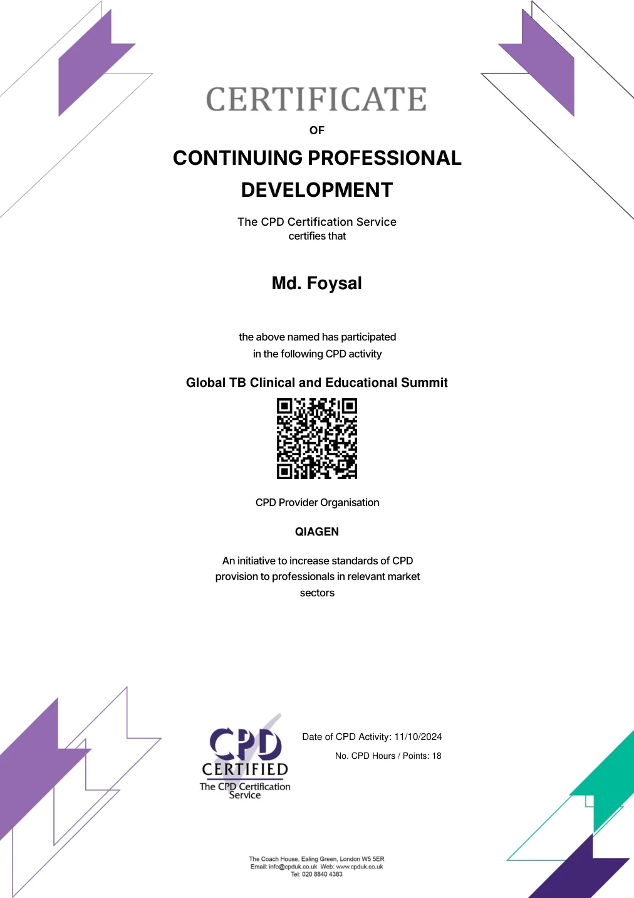
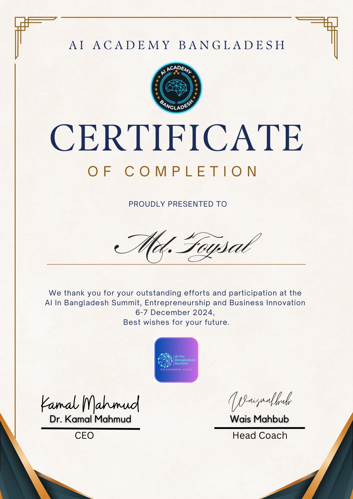

Summit2024
Global TB Clinical and Educational Summit
QIAGEN / CPD Certification Service
Professional conferences
Evidence-based summit attendance and professional learning.

QIAGEN / CPD Certification Service

AI Academy Bangladesh
Also listed on original website
Foysal’s source Google portfolio lists “New Horizons: Youth-Led Innovation for a Livable Planet.” The original certificate was not among the files provided, so the event is listed without a reproduction.